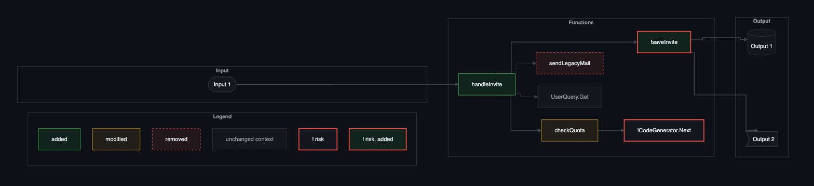
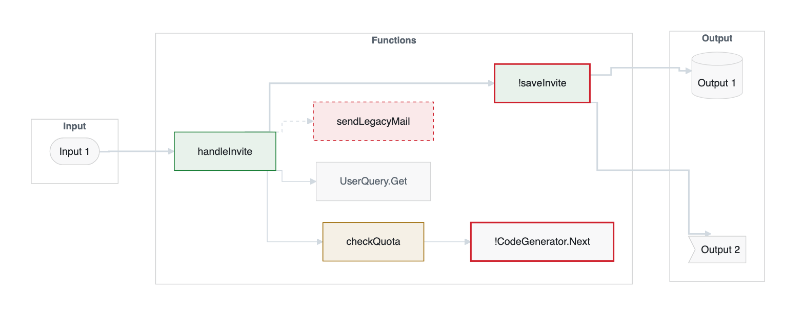
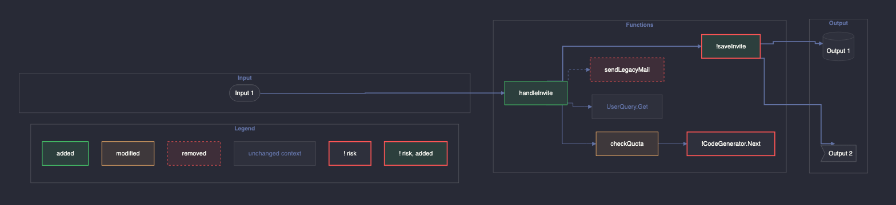
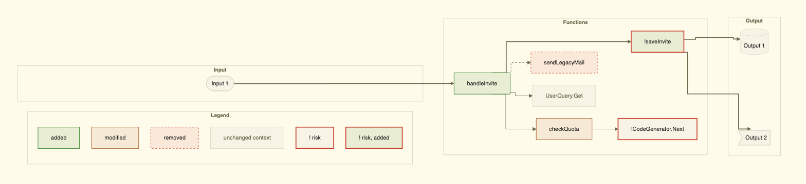

The four built-in themes
github-dark (default)

From beautiful-mermaid. GitHub’s own dark colours. Quiet edges, clear status colours.
pr-brief config set diagram.theme github-dark
github-light

From beautiful-mermaid. GitHub’s light colours on white cards.
pr-brief config set diagram.theme github-light
dracula

From beautiful-mermaid. Strong blue-purple edges on dark cards. The clearest edges of the four.
pr-brief config set diagram.theme dracula
alucard

Dracula’s official light theme, from the Dracula spec. Not in beautiful-mermaid; mapped the way beautiful-mermaid maps dracula.
pr-brief config set diagram.theme alucard
The style follows beautiful-mermaid (MIT, Craft Docs): flat surfaces, thin strokes, sharp corners, orthogonal edges, and colours derived from the background and the text colour. The added, modified and removed colours are not in beautiful-mermaid; each theme takes them from its own palette. A green border is added, amber is modified, a dashed red border is removed, grey is context, and a thick red border marks risk.
Try one without changing your config: pr-brief diagram --flow flow.json --theme dracula.
Your own theme
A theme is a JSON file in beautiful-mermaid’s format: two required colours, five optional ones, and an optional status block.
{
"$schema": "https://raw.githubusercontent.com/gagoar/pr-brief/main/schema/pr-brief-theme.schema.json",
"bg": "#10141c",
"fg": "#e4ecf7",
"line": "#4a5a78",
"muted": "#8b9bb4",
"status": { "added": "#2ecc71", "modified": "#f1c40f", "removed": "#e74c3c" }
}pr-brief theme validate ./design/theme.json pr-brief config set diagram.theme ./design/theme.json --scope repo
- Colours are hex (
#rgbor#rrggbb), because GitHub accepts nothing else. fgneeds a contrast ratio of 4.5:1 againstbgand against the node fill, or the file is rejected.- Missing optional colours are derived from
bgandfg. Missingstatuscolours default to green, amber and red tuned to the background’s lightness. accentis accepted for compatibility. In beautiful-mermaid it colours arrowheads; Mermaid colours an arrowhead like its edge, so here it has no effect.- The path is relative to the config file that names it. In a repo config it must stay inside the repo: no
.., no absolute path, no symlink out. That way CI reads the same file. - The begin marker records
theme=custom:<8 hex>, a hash of the theme. Change the file and old diagrams fail the gate untilpr-brief diagramredraws them.
Why a theme is exact
The gate recomputes the whole style from the theme and compares it with the diagram line by line: the init line, every colour definition, and the edge styles by number. A hand-edited colour fails, with the line it expected and the line it found. That is also why a model never writes the style: it runs pr-brief diagram and pastes the output.
On GitHub, the Output box drops below the Functions box unless the deepest function has invisible links to each output. The tool adds them. See the gate.
Verified on GitHub (Mermaid 11.17.2) in light and dark mode. Azure DevOps is not verified for the init line, the invisible links or per-edge styling.